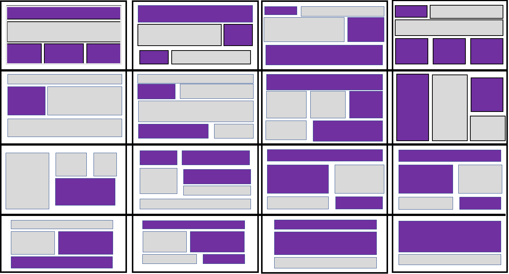
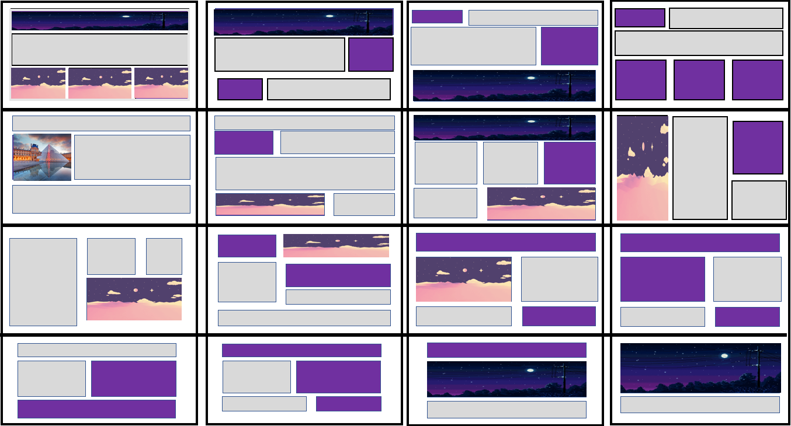
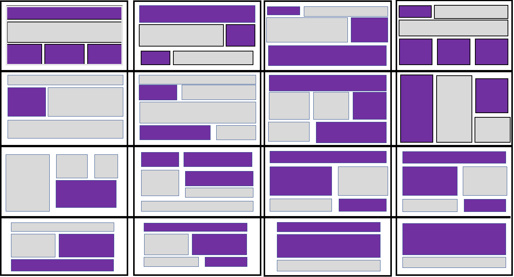
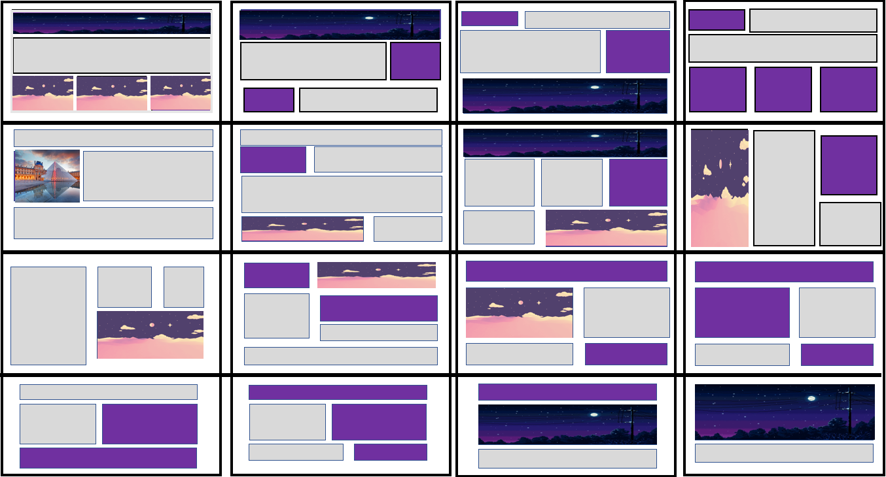
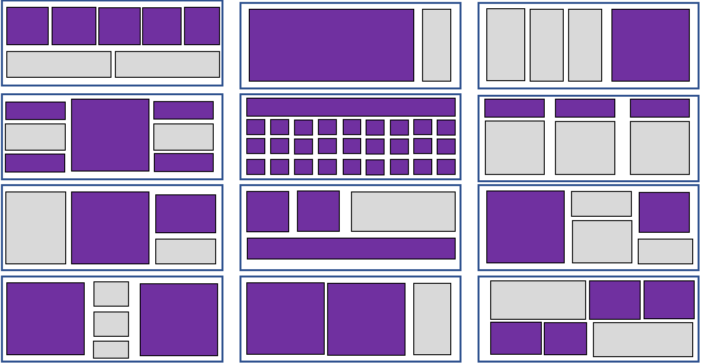

Activities
Activities During USERDES
Activity 1: Introduction and Account Creation
I’m Patrick Rosales and I’m 19 years old and, I live at Merville, Pasay City. During the first year of my Senior High, I’m not used in going somewhere alone, so I am nervous because it will be my first time travelling/commuting alone going to Asia Pacific College, so I think I can say that the nervousness I felt is an indicator that I kind of traveled by myself to place I can consider new for me. After staying in APC during my senior high school days, My friends and I, had a summer outing by ourselves, it was my first time going on a beach without my family, I was scared because we commuted by just following direction we found on the internet so I was nervous the whole time because I think that we might get lost, but fortunately, we didn’t, so for me I think that I had an unexpected adventure with my friends because I was able to do the things that I’m not used to. My freshman year did go smoothly since I had credited subjects, so my subject load wasn’t that big and since the first year was more on general subjects, i had an idea since i took senior high here, so i was able to do advanced readings. I was able to relax and have fun with my friends. I spent my summer at home, playing games, eating, and sleeping, so I think that is enough for me because I prefer to maximize the vacation by relaxing at home, some would say that my summer is boring, but I am satisfied with what I’ve done the whole summer. Some would define summer vacation, as travelling, but I say that would depend in the person. Since I usually try to avoid asking money from my parents, i would only accept invitations if I have any spare money. The feelings I felt when I experienced those things I’ve mentioned are: nervousness and happiness, Since I usually have a good time with my friends, and we’ve been together for years, I am usually happy with them. I can say that I’m an optimist person, so sad/depressing things rarely affects me. I expect this class to be fun because this includes designing which is one of my interests, I also expect this class to be also hard because this subject is I think is a fundamental part of my course as BSIT-MI since designing would be a vital part of making a program.
Activity 2: Favorite Application

My most used application as of now is Netflix. This application sorts the series or movies depending on their genres. I usually spend my time watching any series that I find interesting while I’m going through the app. I liked it because it offers a wide variety of series or movies that I can watch. And the thing I most liked about this is that it doesn’t have an advertisement that pop ups out of nowhere unlike other video streaming apps, so I can watch smoothly without any interruptions. I can also download contents on my phone so I can watch it anywhere and since I usually get stuck on traffic I can watch it so I won’t get bored while I’m waiting It also has a feature that when you’re after watching a certain series or movies, it will show a related content that might make the user to watch more. The price for this is 550 pesos for premium subscription. I can say that the price is justified by basing from the contents it offers and you’re just required to pay monthly and you can share one account with up to 4 people so that you can divide the price, so you can fully take advantage of the price. The only thing that I find disappointing is that Netflix offers different contents depending on the country so some movies or series might not be available here, but it is available on other country due to licensing deals but this is the only thing that I dislike about the whole app.
Activity 3: Designing 1000 Floor Elevator
OUTSIDE INSIDE


Designing an elevator which can go as high as 1000 floor is hard, by taking capacity, speed, reliability, into factor can be hard, but since this is just theoretically, I designed an elevator which can cater up to 70 people each trip. I divided 1000 floors into 4 elevators. First elevator is from 1st to 250th, next is 250th to 500th, then 500th to 750th and lastly from 750th to 1000th floor. My designed elevator is operated by keycard for security, accessing the elevator and for observing the capacity of the elevator. For example, a person used their keycard to operate the elevator a capacity counter will count each keycard used in operating the elevator. The elevator also has a weight counter, because the capacity of the elevator isn’t exactly considering the persons: weight, and items they’re with. So even the capacity states that the capacity hasn’t reached 70 yet, but the weight counter determined that the elevator reached its limit, the keycard reader won’t accept any keycards anymore. The interface consists of numbers for inputting the desired floor, the screen also indicates which floors the certain elevator can go up to. When the users have done entering their desired floor, a pop up will show asking if the number input is correct to avoid the elevator to stop at wrong floors and can waste time. On the inside, the keycard reader is gone, the interface shows the current floor, the next floor stop, open and close buttons, and emergency button. Since 250 floors can take a long time, I put a music feature to entertain the users. There is also a screen which indicates the song that currently plays, and next songs to be played. The elevator itself will be divide into four spaces. There will be a certain spot in which the users should be. For example, I used the elevator to go to 245th floor, there will be a spot for me that I should go. Let’s consider it as Spot 4. Spot 4 are for the persons who will go from 186th to 250th floor. Spot 1 for 1st to 65th floor, Spot 2 is for 65th to 129th floor and spot 3 is for 129th to 193th floor. This can remove the problem for the users when they’re about to go outside. Given the usual problem in a common elevator in which the person who’s about to go outside the elevator, is on the furthest from the entrance, this will take time and inconvenience to all of them. By implementing this, it will make the process smooth. The speed would be a problem for my elevator, since it can’t just accelerate because some users might be going outside to floors not far from each other so acceleration for this is a major problem. For this problem, I think there has yet to be a solution for this, but for now, I will just use the common pulley feature of a common elevator.
Activity 4: Need Finding
Problem: Students doesn’t keep track on their absences and tardiness. Some students tend to record/sign other students’ attendance even though they are not physically present. Fair attendance records for those students who came in class on time. Our solution for this is to create a mobile and web application for teacher's that will scan the RFID provided in the student's ID. This application will monitor the student's attendance and it will display the time in and out of the students. Lastly, the Data will be stored in a cloud storage that can be viewed by students in the web application and can be managed by teachers
Activity 5: Prototype and Login Forms


Activity 6: Persona Creation
Activity 7: Information Design
This activity is for us to create a clear and concise invitation using the given information considering the visual aspect of the output which includes the topics included in our UserDesign Class
Activity 8: Grid Layout Design
Grid Designs A-B-C-D


 



Activity 9: 12 Column Grid Design
Projects
First Web Application Using GitHub and Heroku
Heroku LinkTask is to Create a simple Web application using HTML and CSS
Web App Level Up!
Heroku LinkTask is to implement JavaScript, Bootstrap, and CSS in our Web Application
Reflections
User Design Learnings
Reflection 1: First Week of USERDES Class
I can say that I was satisfied on my first week on USERDES class because from the beginning I am really interested in this subject, I love designing things although before this class, I don’t have someone to guide me in designing, that’s why I appreciate our professor because she keeps our class interactive while at the same time we also learn new things. I think I really was able to provide a creative idea on our elevator activity, because I never thought I would be designing those kinds of things which made me more interested in designing. Before this class, my understanding of ‘designing’ is limited to how it will be attracting to look at, it never crossed my mind that designing include the ‘how will it work’ part. The ambience on this class is very soothing. Having a professor who I can say that we can vibe with while providing us with knowledge is very fun to have. I am looking forward to having a lots of fun while learning.
Reflection 2: Need Finding and Paper Prototyping
The class atmosphere this week is even lighter compared to last week, I’ve learned more things about this subject. Thinking of an application might sound easy but considering every aspect such as problems, possible solution, how will it be implemented, designs, are exhausting. We also had a chance to think thoroughly, considering everything that can affect our desired project. I think this class is being better every week that past. Being able to think intensively while having someone to guide us is good enough for me to say that I am currently satisfied with how the way things are right now. There’s also a lot of materials that we can learn from accessible anywhere, so the learning is not limited to our classroom. I wish the atmosphere will stay till the end of the term.
Reflection 3: First Web App Using GitHub and Heroku
This week’s task to create a Web application was kind of hard for me since the last time I programmed using HTML was years ago so I had a hard time doing a website that suits my preferences, so I had to check some tutorials on the internet to do a certain thing on my web app. The hardest obstacle that I’ve encountered is adjusting the images so that It wont look like as if it is shouting, although I find it hard to adjust, I’ve just scratched that idea and started to make a new design on my L2 which is to use Bootstrap, CSS, and JavaScript. I am familiar with the terms but it is still hard for me to find what would I really like because ideas just keep coming so I had to change a certain thing again and again so this task is time consuming for me although I am having fun while doing this. Uploading to GitHub and making my app run in Heroku did go smoothly, but the results isn’t that good. The valuable thing I’ve learned while doing this task is it is okay to keep changing ideas because exploration of concepts is good, it might be time consuming but at the same time I am learning, and I can use the ideas that I didn’t use as a future reference. Also, this task made me aware that I need to study more about HTML, CSS, Bootstrap, and JavaScript since I had to rely on the internet to do my task.
Reflection 4: User Inyerface - Worst UI Practice
First thing is that this practice is basically an experience when dealing with an incorrect way of doing a website which really helped me be aware of the things I should avoid when doing a website. I felt irritated the whole time because of the misleading designs which kind of gave me a hard time while doing this but at the same time I’ve been more aware of the things I should and should not do in designing. Also this activity really informed me that reading is fundamental, anyone can finish this when they know how to read and just use their common sense although it took me 9 minutes at my trial but at my second trial I’ve finished the practice in less than 3 minutes. The most annoying part is the verification part because it is tiring to click all the same pictures just for verification also the terms and condition part is irritating because of the slow scrolling speed but I used a trick in speeding it but if I wasn’t able to know that trick, it might make me more irritated than I really am while doing that UI practice. Basically this activity is just to make us learn about doing the correct way in designing, I am hoping for more activity like this because it is challenging and informative.
Reflection 5: Socit Fest
This year’s SOCIT Fest is good for me because it was able to expose me in different platforms that can be used in my subjects. Azure works like Heroku although it seems more complicated to use compared to Heroku so I think I’m still going to use Heroku. Although the speaker might be the reason of the event’s success and I might not be able to contribute something, but at least I was able to learn something through this seminar which is the speaker’s main objective in doing the seminar. I think that this event can be improved into an interactive type of seminar instead of the speaker just talking, I think that there should be a part in which we are able access a premade site which is created through that platform. My expectations for next year’s SOCIT Fest is just for it to be more an interactive type of event.
Reflection 6: Fist Half of USERDES Class
First Half of USERDES class were able to impart knowledge regarding about this subject, there’s a lot of things I’ve learned that I wish I should’ve learned earlier through my college years. So far, the activities done are fun and is really a source for learning. The challenges I’ve encountered was being undecisive on my work, especially on the Lab 1 and Lab 2 part, because I kept changing my design due to new ideas, but I think it was a good thing because that’s the activity’s point was about. My expectations for the finals are the same for all the subjects, I think it will be hard, and time consuming. The class for me is already good and there’s nothing left to improve.